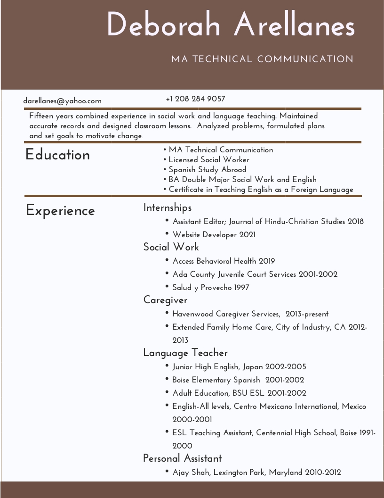

My Story
I completed my BA double major in English/Linguistics and Social Work in 2002. Wanting to expand
my career options, I enrolled in the MATC (Master of Arts Technical Communication) program in 2015. Every MATC course,
uniquely taught me that good technical communication equates to easily read and understood deliverables. The homework
has entailed, among other things, countless hours of writing and editing, pushing me to higher levels of understanding.
I can now more quickly create effective documents because I can recognize lack of flow, analyze user experience, and
apply design principles. My portfolio demonstrates a wide array of topics and applications.
Academics
The MATC program exposed me to new information from day one. My first class assignment was a 5-page
proposal with an accompanying PowerPoint presentation in ENGL 512 Technical Rhetoric and Applications.
I chose solar energy as my topic because I had recently read Danny Kennedy’s Rooftop Revolution: How Solar Power
can save our Economy—and Our Planet—from Dirty Energy. The class assignment gave me the opportunity to research the
field through various books, websites, documentaries, and interview people in the field. I learned that there are a tremendous
amount of options, high-stakes obstacles, and colossal benefits and drawbacks. They affect everyone,
and the future of the world, economically and politically—both negatively and positively. Learning about such a large assortment
of issues, then including them in single proposal and PowerPoint presentation pushed me to think more critically
about how to present information. I wanted an all-inclusive proposal—not missing any known aspect—to ensure it would hold up in a
professional setting. I spent hours combing through research, organizing, writing, and re-writing. I addressed each issue
systematically and transitioned through topics smoothly as they related to each other. My completed proposal included an
overview of the problems with fossil fuels and an explanation of electric cars and a home solar system. My PowerPoint presentation
detailed the hazards of fossil fuels and the barriers to solar and wind energy.
I first learned HTML about 10 years ago, but didn't continue with it. In my second class, ENGL 518
Writing Software Documentation, the assignment was to create a website. Coding with HTML was an option, but
the norm was to use drag and drop software. I decided to relook at HTML and ended up coding a 15-page website.
My topic was how to repair VWs, and since I didn't know to much about that, I collaborated with a VW mechanic. I spent
the semester relearning HTML, learning the mechanical parts of vehicles, while organizing, writing, editing, and
incorporating design principles. (Whew!) A few semesters later, I came across an electrical engineer who needed
a website for his home remodeling business. For my internship I coded his website (I knew more by then) through a
collaboration.
For me, the backbone of the MATC program was ENGL 513 Technical Editing. Although I
didn’t take it until my 4th semester, I wonder if it would have made my previous semesters easier because I
learned so much about the intricacies of writing. We edited numerous documents, everyday (there was never a break)!
Some were poorly written sentences with an easy fix and others full of big words that needed condensing to plain
language. I learned about stress and emphasis, word placement, new and old info, eliminating redundancies,
using words that give life to writing, and deleting words and phrases that create vagueness. The extensive level
of editing made my future classes and the entire writing process easier. Although, no matter how much I edit,
every time I reread my writing, I wonder how I could have ever thought it flowed in the first place.
In ENGL 511 Rhetorical Theory for Workplace Writers, we read journal articles every
week. By then I had developed the perspective of analyzing how the author organized the information. On one assignment,
I was stuck in writers-block mode, struggling with the concluding paragraph. So I put it down and picked up another
journal article. Skimming, I came to the sentence “…every typeface has rhetoric…,”. There it was! The Aha
Moment! I expanded on that to conclude that pesky assignment I was stuck on, and appropriately cited. That revelation
clarified for me how important it is to learn as much as possible about writing and design because it would
enable me to create far more valuable pieces.
Every class required a presentation. That helped me learn to choose my words carefully. I didn't
want to stand there and bore everybody. I learned to create effective PowerPoint presentations by spending hours
making sure each explanation flowed well to the next and that the slides were relevant and interesting. Most notably,
my presentation about alternative energy starts with photos of each of the fossil fuels and uranium in their perspective
excavation sites. Then I cover their potential dangers, specifically fires and meltdowns. I then listed (with an accompanying photo),
the unintended consequences which are, among others, smog and acid rain, and how air pollution particles are microscopic, easily
breathed in, and can enter the bloodstream, and are highly toxic. I then explained how alternative energy is the solution,
existing barriers, and how the scientific community is working to get past them.
Ready to Move Forward
Throughout the program, I have developed a far more organized strategy for working through writing projects.
I consider typeface, design, colors, as well as lively and effective plain language. My highest priority is how easily the reader will
absorb the information. I consider how and why a document will be used and what I can do to make that a positive experience. That means
at least three massive revisions. Thinking back to my first solar energy proposal experience in 512, I see tremendous growth.
